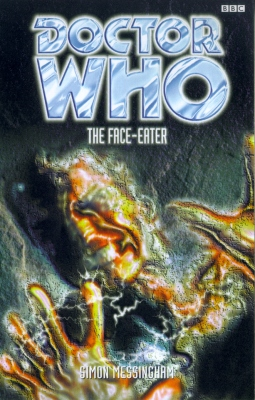

|
The Face-Eater
|
BASIC PLOT DOCTOR COMPANIONS MATERIALISATION CIRCUIT PREPARATORY READING CONTINUITY REFERENCES Pg 38 "It was as if that stuff with Saketh and that had never happened." Beltempest. Pg 46 "There was talk of Oceanic-Nippon Bloc space development, ma'am." Back in Warriors of the Deep, the world was divided into 'blocs'. Pg 49 Mention of Daleks. Pg 50 "Well, you know, the microorganisms and all that." Beltempest. "I promise not to put on a white robe and sit in the lotus position dispensing mystical sophistry." Funnily enough, this is Beltempest too, or, if it isn't, it might as well have been. Pg 52 "Oddly, despite the naked cell bulb, his face was dark and shadowed. Only his eyes were glinting, as if they had sucked in all the surrounding light." A moment of NA-ness, where the Doctor appears to be able to manipulate those around him by playing with the light-switches. Glorious. Thank you for reminding us of what we have lost. Pg 54 "'The Doctor' a.k.a. John Smith, seconded from the old UNIT peacekeeping force upon its disbandment." The Invasion et al, as you so clearly knew. See also Continuity Cock-Ups. Reference to Jo Grant, Sarah Jane Smith and Ace. Pg 91 "Comparative psychology and culture... Sea Devils!" It turns out to be a reference to Warriors of the Deep, but the Sea Devils come from The Sea Devils, another Malcolm Hulke triumph of imaginative titling. Pg 95 "'Noninterference? It's a nice idea but a bit old-fashioned.' The Doctor gave her a funny look. 'Really?'" Reference to the Time Lords' policy. Pg 101 "Three years of poking around in that Sea Devil base, the one that had launched that attack in 2084." Warriors of the Deep. Pgs 111-112 "There was a picture in his mind: the cell on Ha'olam." Seeing I. Pg 113 "He visualized something neutral, a barrier to trap the Face-Eater." As he did way back in The Space Museum. Pg 114 "He saw Susan and Polly laughing, his old diary, a Prydonian headdress, Sam's mad, immortal, perfect face, a Cyberman tumbling through space. A partridge in a pear tree. A man is the sum of his memories. A Time Lord even more so." Susan and Polly, obviously, although the grammar suggests that they were both together, which we hardcore fans know has never happened (although there's scope for a Short Trip here, if ever I heard one). The Power of the Daleks. The Deadly Assassin (or somesuch). Beltempest. The Moonbase. Doctor Who in an exciting adventure with the Twelve Days of Christmas. The Five Doctors. Pg 117 "The red light next to the lens flickered once, then began replaying its last few minutes over and over again. The data-umph spray would last a quarter of an hour. Don't ask how it works, she thought, it just does." Data-umphs are from Seeing I, but see Continuity Cock-Ups. Pg 137 "It was beginning to become an obsession, the thought that even a trace of the nanites might still exist in her body made her sick." Beltempest again. Not that we ever get an explanation, in either this novel or the previous one, as to exactly how they went in the first place, oh no. That, surely, would be too much to ask. Pg 161 "Many species have developed the capability [of shape-shifting], either through genetic tampering like the Rutans, or..." Horror of Fang Rock. Pg 167 "His hands reached for his jacket lapels." It may be the faux-Doctor and not the real thing, but he's got the continuity spot-on! Pg 173 "It might be final proof that she was clear of those bloody microorganisms." Beltempest. Again. Pg 179 "You scumbag! You killed Ben, didn't you?" It would appear that the Doctor has had Sam watching Remembrance of the Daleks on his thought-transmitter device thingy that Zoe watched so many years ago. Pg 205 "Remember the cell. Remember those three years. I thought I would go mad, I really did. You saw me weak, weaker than anyone has ever seen me. My picture, you remember my pictures." The faux-Doctor has got the real Doctor's memories of his imprisonment in Seeing I. Pg 209 "Funny place, Mars. Two indigenous forms of life, totally different. Ice Warriors and..." the beings who would be generically referred to as The Ambassadors... OF DEATH! Also The Ice Warriors, of course. Apparently (Pg210) "Certain people have spent years trying to tie them together. Never do it, of course..." Those certain people will be us, the fans, then. Pg 210 "I've seen it all over the galaxy. Werewolves, manitous, shape-shifters, Rutans, robots. Even the Master has been known to give it a whirl. And did I tell you about that time at Crook Marsham? Most memorable." He's talking about shape-shifting and tapping into your greatest fears, so he means: The Greatest Show in the Galaxy and Wolfsbane, unknown, could be anything, Horror of Fang Rock, Kamelion in The King's Demons and Planet of Fire, The Mind of Evil and, finally, Nightshade. Pg 214 "About two hours ago. When I was telling you about that time I ran into the Hoothi." Because telling Leary about the possession abilities of the Hoothi in Love and War was clearly a really good idea. Pg 218 "Leary held out his hand. 'Goodbye, Doctor.' The Doctor made the appropriate cultural response. 'This is normally reserved for the end of the adventure.'" As a handshake so clearly was in Logopolis, for example. Arrant nonsense! Pg 225 "Someone must have been telling lies about Jake Leary, for without having done anything wrong he was arrested one fine morning... Only he wasn't. He gave himself up." The second sentence here immediately renders the first one meaningless, making it even clearer that the first is only there because it's a rehash of the opening line of Franz Kafka's The Trial, appearing here with gratuitous abandon. Pg 229 "Her brain felt numb, drained, concerned that she wasn't free of those things that had found life inside her." Beltempest. Yet again. And still no explanation as to how. Pg 231 The neutronic bomb will "destroy the threat, whatever it was, but leave the city intact for a later date." This is consistent with neutronic devices right back to The Daleks. Pgs 247-248 "A memory of another mountain. It felt like centuries ago [...] The blue crystal of Metebelis III [...] Not human. More like... eight-legs [...] The Queen was mad, she would do anything to get the crystal back. He would have to face her, though he knew it would destroy him." The Doctor is having a bad case of the flashbacks to Planet of the Spiders. Pg 248 "Back in the lab. The UNIT lab. Where Jo had sent the crystal back to him." Planet of the Spiders again. "Something was wrong. Something wasn't right." And the award for tautology of the decade goes to (drum roll) Simon Messingham. Mention of Sarah Jane Smith. Pg 252 Mention of UNIT and the Bug-Eyed Monster concept. Pg 255 "You think you're the only gestalt life form I've ever encountered?" The obvious contender is in Image of the Fendahl, but I'm sure you can think of others. OLD FRIENDS AND OLD ENEMIES NEW FRIENDS AND NEW ENEMIES Cheeky Monkey, a Proximan native. The F'Seeta.
CONTINUITY COCK-UPS PLUGGING THE HOLES [Fan-wank theorizing of how to fix continuity cock-ups] FEATURED ALIEN RACES The F'Seeta is a combined being which started small but gradually absorbed all the life on the planet, thus getting rather bigger. Now it can do just about anything Messingham needs it to. The shapeshifters are agents of the F'Seeta. They are able to take on forms based on their victims' deep fears, but are vulnerable to bright light and are at their weakest when changing form. FEATURED LOCATIONS IN SUMMARY - Anthony Wilson |
|
 |